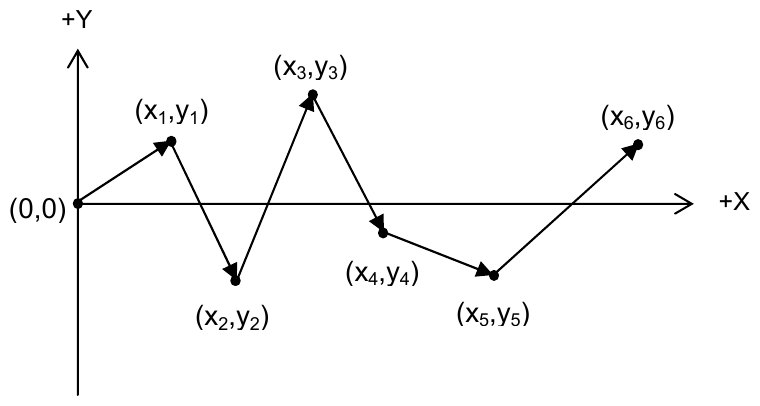
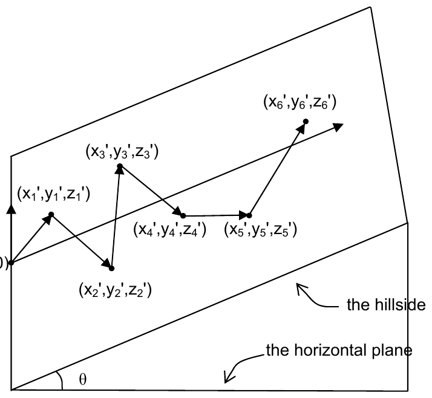

2007 ICPC World Finals · Problem C
You are the chief designer of a road race that will be held in a hilly area. The racecourse consists of N connected straight line segments; that is, the end of the kth segment coincides with the beginning of the (k+1)st segment. During planning, these segments are laid out on a planar surface, so 2-dimensional Cartesian coordinates identify the endpoints. The first segment begins at the origin. Figure 1 shows the planar view of a racecourse with 6 segments.

The actual race is run on the side of a hill. For simplicity, assume the hill makes an angle θ with the horizontal plane, as illustrated in Figure 2.

The plane of the hill and the horizontal plane intersect in the y-axis. Each 2-dimensional Cartesian coordinate (xi, yi) corresponds to a 3-dimensional form (xi′, yi′, zi′), with zi′ representing the height of the endpoint of the ith linear segment. The height of the origin is 0.
This particular race is intended for novice drivers, so the racecourse must not include any segments that require downhill travel. That is, if the height of the endpoint of segment k is zk′, then the height of the endpoint of each segment after segment k must not be less than zk′. Formally we can write zk′ ≤ zm′, for m ≥ k.
If a proposed racecourse includes downhill segments, it might be possible to transform it into a racecourse with no downhill segments by rotating the planar view of the entire course about the origin, without changing the angle between consecutive pairs of segments. However there may be proposed racecourses that cannot be made acceptable by such a rotation.
In this problem you must determine if a proposed racecourse is acceptable (that is, if it does not contain any downhill segments). If it is not acceptable, you must determine the minimum angle through which the racecourse must be rotated to make it acceptable, if that is possible.
The input consists of multiple test cases. Each test case is a description of a proposed racecourse and the slope of the hillside on which it will be run. The first line of each description contains two integers N (1 ≤ N ≤ 10000) and θ (0º ≤ θ ≤ 45º). N denotes the number of segments in the course and θ denotes the angle (in degrees) that the hillside makes with the horizontal plane. Each of the next N lines contains a pair of integers (xi, yi), (1 ≤ i ≤ N), which are the endpoints of the linear segments comprising the racecourse. The first segment begins at the origin, and segment k+1 begins at the endpoint of segment k. No segment has zero length.
The last test case is followed by a line containing two zeroes.
For each test case, print a line containing the test case number (beginning with 1). If the proposed course is acceptable without rotation, print “Acceptable as proposed”. If the course is not acceptable as proposed, but can be made acceptable by rotating it about the origin, print “Acceptable after clockwise rotation of X degrees” or “Acceptable after counterclockwise rotation of X degrees”. The value X should be an unsigned number. For our purposes, a clockwise rotation would rotate the positive y-axis toward the positive x-axis. If both a clockwise and a counterclockwise rotation can make the course acceptable, choose the one with the smaller angle. If both rotations have the same angle, then either a clockwise or counterclockwise rotation will be accepted. If the course cannot be made acceptable by any rotation, print “Unacceptable”. Display the angles of rotation rounded to two fractional digits.
Print a blank line after the output for each test case. Use an output format similar to that shown in the sample output below.
2 45 10 10 0 1 2 0 1 1 2 0 3 45 10 10 1 10 5 6 0 0
Case 1: Acceptable after clockwise rotation of 131.99 degrees Case 2: Acceptable as proposed Case 3: Unacceptable